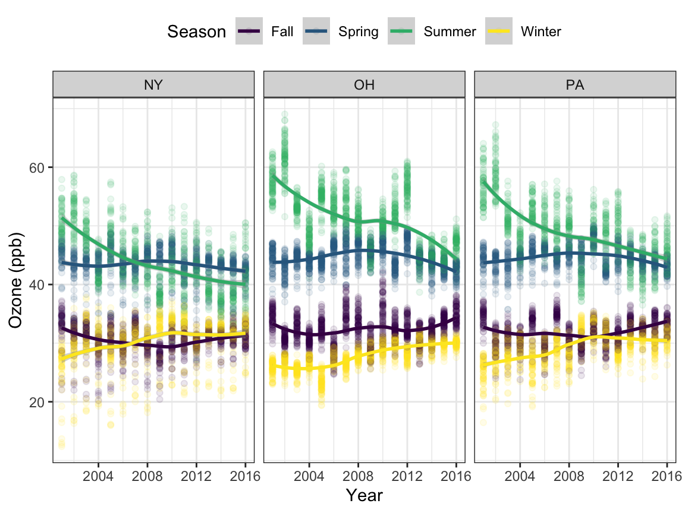
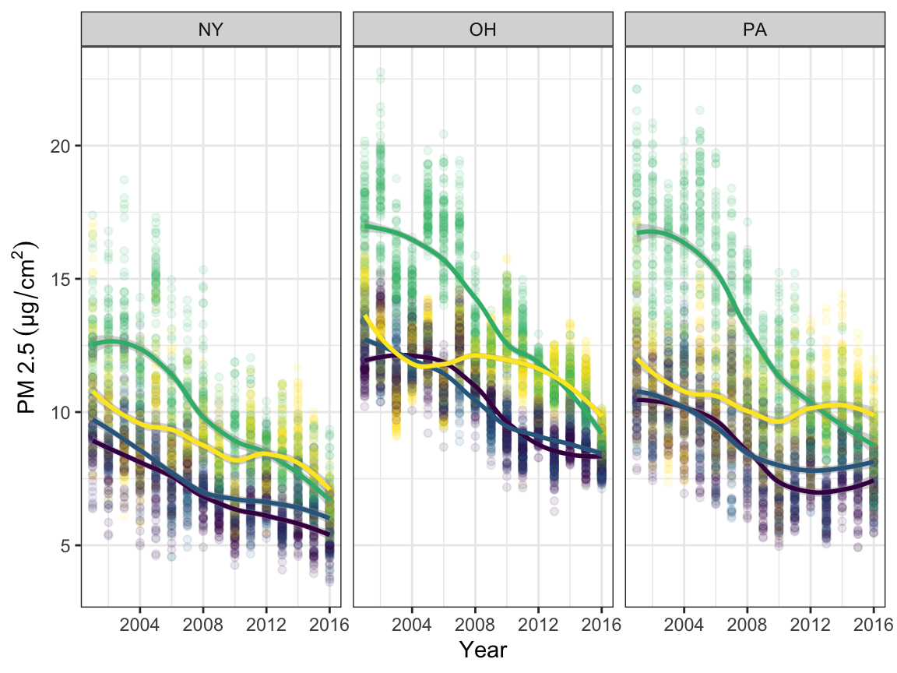
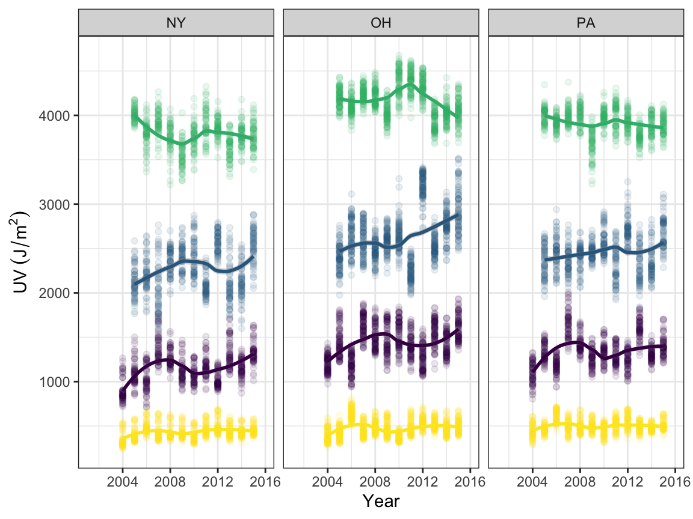

For the climate data we were interested in metrics that were potential risk factors for asthma, lung cancer, and skin cancer, keeping in mind spatial parameters of obtaining data from different states at the county and state level while also looking at longitudinal data across multiple year.
We were able to use a national database maintained by the EPA to obtain daily concentrations of 2 specific air pollutants – inhalable particles termed fine particulate matter (PM2.5), and ozone gas (O3) – at the county level across the states from 2001 to 2016. The dataset has no missing values since the it is partially supported by a credible simulation model.
Similar to the air pollution data, we have daily UV measurements at the county level across the states from 2004 to 2015. However, there is occasional missing data and as a result, we ruled out the years populated with missing values for analysis.
For more information about the original data set and methods, see the relevant sites:
Once we imported each of these data sets into R, the data sets were merged across the three states for both longitudinal and cross-sectional data. The data import and cleaning of the original data for UV irradiance, PM2.5, and ozone can be found in our github repository.
Load packages.
library(tidyverse)
library(rvest)
library(httr)Scrape FIPS data and put it in a dataframe. See USDA County FIPS.
usda_countyfips = read_html("https://www.nrcs.usda.gov/wps/portal/nrcs/detail/national/home/?cid=nrcs143_013697")
countyfips_string =
usda_countyfips %>%
html_elements(".data") %>%
html_text2()
countyfips_matrix =
matrix(
data = unlist(strsplit(countyfips_string, split = "\r "))[-c(1:3)],
ncol = 3,
byrow = TRUE
)
countyfips_df =
tibble(
countyfips = countyfips_matrix[,1],
county = countyfips_matrix[,2]
) %>%
mutate(
countyfips = as.numeric(countyfips)
)Load and tidy air pollution data.
pm_df =
read_csv("../final_raw/Daily_PM2.5_Concentrations_All_County__2001-2016.csv") %>%
filter(statefips %in% c(36, 39, 23, 42)) %>%
janitor::clean_names() %>%
mutate(
countyfips = statefips*1000 + countyfips,
day = str_extract(date, "^\\d{2}"),
day = factor(as.numeric(day)),
month = str_extract(date, "[A-Z]{3}"),
month = factor(month)
)
oz_df =
read_csv("../final_raw/Daily_County-Level_Ozone_Concentrations__2001-2016.csv") %>%
filter(statefips %in% c(36, 39, 23, 42)) %>%
janitor::clean_names() %>%
mutate(
countyfips = as.numeric(statefips)*1000 + countyfips,
month = factor(month),
day = factor(day)
)Load and tidy UV irradiance data.
uv_df =
read_csv("./data/Population-Weighted_Ultraviolet_Irradiance__2004-2015.csv") %>%
filter(statefips %in% c(36, 39, 23, 42)) %>%
mutate(
day = factor(as.numeric(day)),
month = factor(month),
month = recode_factor(month, `1` = "JAN", `2` = "FEB", `3` = "MAR", `4` = "APR",
`5` = "MAY", `6` = "JUN", `7` = "JUL", `8` = "AUG",
`9` = "SEP", `10` = "OCT", `11` = "NOV", `12` = "DEC", .default = "Other")
)Join the air pollution and UV data sensibly, and match the county names using the FIPS dataframe.
ap_uv_df =
full_join(pm_df, oz_df, by = c("year", "countyfips", "month", "day")) %>%
full_join(., uv_df, by = c("year", "countyfips", "month", "day")) %>%
left_join(., countyfips_df, by = "countyfips") %>%
mutate(
statefips = str_extract(countyfips, "^\\d{2}"),
state = case_when(
statefips == 36 ~ "NY",
statefips == 39 ~ "OH",
statefips == 23 ~ "ME",
statefips == 42 ~ "PA"
),
year = factor(year),
state = factor(state),
state = fct_relevel(state, "ME", "NY", "PA", "OH"),
countyfips = factor(countyfips),
) %>%
select(-contains("statefips"), -date) %>%
select(year, month, day, countyfips, county, state, everything())Export the large tidied dataframe whole and its summaries for our project.
tidy_df =
ap_uv_df %>%
mutate(
season = case_when(
month %in% (c("MAR", "APR", "MAY")) ~ "Spring",
month %in% (c("JUN", "JUL", "AUG")) ~ "Summer",
month %in% (c("SEP", "OCT", "NOV")) ~ "Fall",
month %in% (c("DEC", "JAN", "FEB")) ~ "Winter"
),
season = factor(season),
season = fct_relevel(season, "Spring", "Summer", "Fall", "Winter")
) %>%
filter(year %in% c(2005:2015)) %>%
group_by(year, countyfips, county, state, season) %>%
summarize(across(pm25_max_pred:i380, median, na.rm = TRUE),
across(pm25_max_pred:i380, round, 2)) %>%
ungroup()
saveRDS(tidy_df,"ap/apuv_map/apuv.RDS")
extreme_value =
bind_cols(
tidy_df %>%
select(pm25_med_pred, o3_med_pred, edd)%>%
summarize(across(pm25_med_pred:edd, max, na.rm =TRUE))
) %>%
bind_cols(
tidy_df %>%
select(pm25_med_pred, o3_med_pred, edd) %>%
summarize(across(pm25_med_pred:edd, min, na.rm =TRUE))
)
saveRDS(extreme_value,"ap/apuv_map/ext_val.RDS")An example of the resulting data set:
library(kableExtra)
knitr::opts_chunk$set(
fig.asp = 0.75,
fig.width = 6,
message = FALSE,
warning = FALSE,
out.width = "100%"
)
tidy_df <-
read_csv("./ap/ap_uv/apuv.csv") %>%
janitor::clean_names() %>%
filter(year == 2005, state == "NY")
kbl(tidy_df[1:7,]) %>%
kable_styling(bootstrap_options = c("striped", "hover"), full_width = T) %>%
scroll_box(width = "100%", height = "200px")| year | countyfips | county | state | season | pm25_max_pred | pm25_med_pred | pm25_mean_pred | pm25_pop_pred | o3_max_pred | o3_med_pred | o3_mean_pred | o3_pop_pred | edd | edr | i305 | i310 | i324 | i380 |
|---|---|---|---|---|---|---|---|---|---|---|---|---|---|---|---|---|---|---|
| 2005 | 36001 | Albany | NY | Fall | 8.46 | 8.17 | 8.02 | 8.07 | 33.11 | 29.21 | 29.56 | 29.57 | 1123.23 | 64.03 | 14.66 | 32.94 | 176.72 | 342.32 |
| 2005 | 36001 | Albany | NY | Spring | 9.26 | 8.84 | 8.72 | 8.74 | 48.76 | 45.79 | 46.04 | 45.98 | 2069.77 | 99.02 | 23.44 | 51.58 | 268.05 | 498.51 |
| 2005 | 36001 | Albany | NY | Summer | 15.68 | 15.11 | 15.02 | 15.08 | 49.85 | 47.98 | 47.84 | 47.84 | 3914.38 | 175.79 | 49.98 | 85.13 | 331.90 | 616.02 |
| 2005 | 36001 | Albany | NY | Winter | 12.79 | 12.07 | 12.07 | 12.14 | 32.12 | 27.64 | 27.88 | 27.84 | 429.64 | 26.08 | 2.56 | 11.16 | 104.63 | 206.31 |
| 2005 | 36003 | Allegany | NY | Fall | 8.50 | 7.30 | 7.45 | 7.34 | 35.61 | 35.21 | 35.09 | 35.08 | 1135.08 | 64.24 | 14.56 | 32.82 | 173.15 | 351.96 |
| 2005 | 36003 | Allegany | NY | Spring | 8.87 | 7.95 | 8.01 | 7.99 | 48.71 | 47.51 | 47.62 | 47.61 | 2059.54 | 99.84 | 25.32 | 52.42 | 245.47 | 458.43 |
| 2005 | 36003 | Allegany | NY | Summer | 14.83 | 14.14 | 14.13 | 14.13 | 54.38 | 52.72 | 52.79 | 52.76 | 4045.63 | 181.38 | 52.39 | 88.74 | 334.92 | 619.09 |
knitr::opts_chunk$set(
fig.asp = 0.75,
fig.width = 6,
message = FALSE,
warning = FALSE,
out.width = "100%"
)
library(patchwork)
scale_colour_discrete = scale_color_viridis_d
scale_fill_discrete = scale_fill_viridis_d
theme_set(theme_bw() + theme(plot.caption = element_text(size = 6.5)))
# Ozone
o3_time <-
read_csv("./ap/ap_uv/o3.csv") %>%
janitor::clean_names() %>%
filter(state == "NY" | state == "OH" | state == "PA") %>%
select(-hover) %>%
janitor::clean_names() %>%
mutate(county = tolower(county))
o3_lreg <-
o3_time %>%
ggplot(aes(x = year, y = o3, color = season)) +
geom_point(alpha = 0.1) +
geom_smooth(method = "loess", se = TRUE) +
labs(x = "Year", y = "Ozone (ppb)", color = "Season") +
theme(legend.position = "top") +
facet_grid(. ~ state)
# PM2.5 plot
pmname = expression(PM~2.5~(µg/cm^2))
pm_time <-
read_csv("./ap/ap_uv/pm25.csv") %>%
janitor::clean_names() %>%
filter(state == "NY" | state == "OH" | state == "PA") %>%
select(-hover) %>%
janitor::clean_names() %>%
mutate(county = tolower(county))
pm_lreg <-
pm_time %>%
ggplot(aes(x = year, y = pm2_5, color = season)) +
geom_point(alpha = 0.1) +
geom_smooth(method = "loess", se = TRUE) +
labs(x = "Year", y = pmname) +
theme(legend.position = "none") +
facet_grid(. ~ state)
# UV plot
name_uv = expression(UV~(J/m^2))
uv_time <-
read_csv("./ap/ap_uv/edd.csv") %>%
janitor::clean_names() %>%
filter(state == "NY" | state == "OH" | state == "PA") %>%
select(-hover) %>%
mutate(county = tolower(county))
uv_lreg <-
uv_time %>%
ggplot(aes(x = year, y = uv, color = season)) +
geom_point(alpha = 0.1) +
geom_smooth(method = "loess", se = TRUE) +
labs(x = "Year", y = name_uv) +
theme(legend.position = "none") +
facet_grid(. ~ state)
o3_lreg 
pm_lreg
uv_lreg